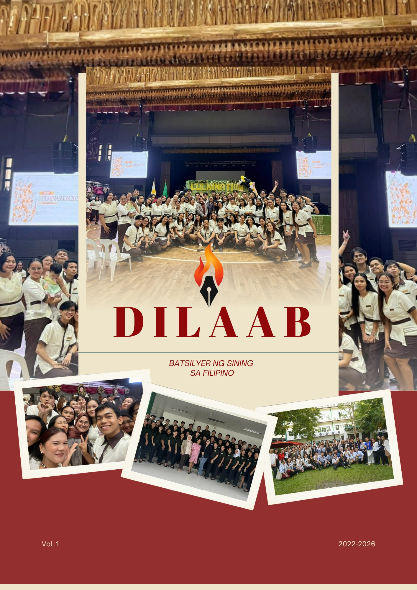
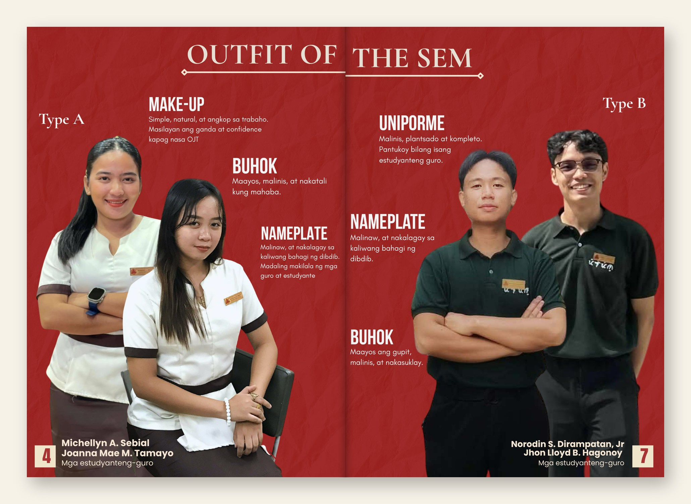
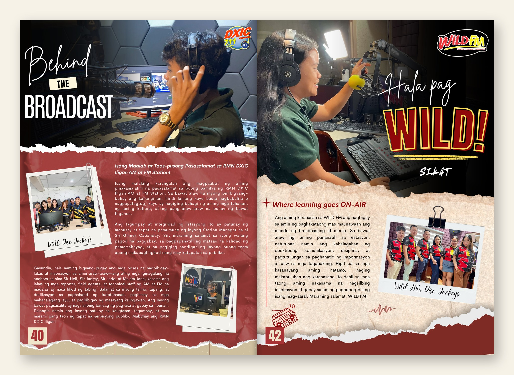

The archive / 001 · Editorial design
DILAAB.
Stories, memories, and moments brought together through thoughtful editorial design.
Project / DILAABDiscipline / Editorial & publication designCollection / Selected pages



DILAAB brings together stories, perspectives, and experiences through expressive editorial design. Each spread reflects a commitment to visual storytelling, where typography, imagery, and composition work together to give every story its own voice.